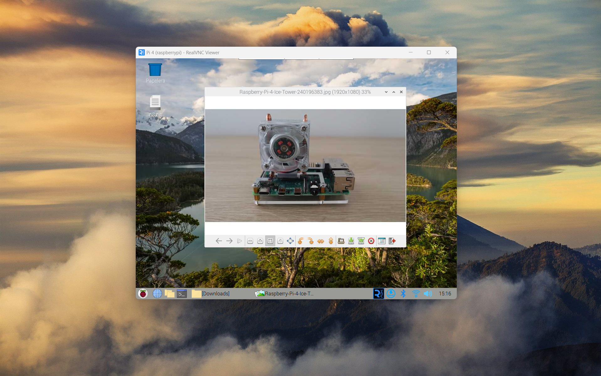
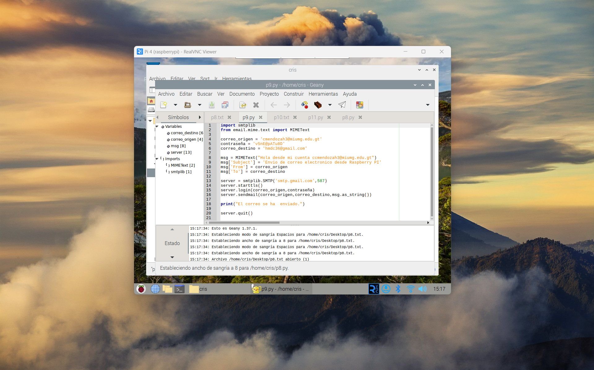
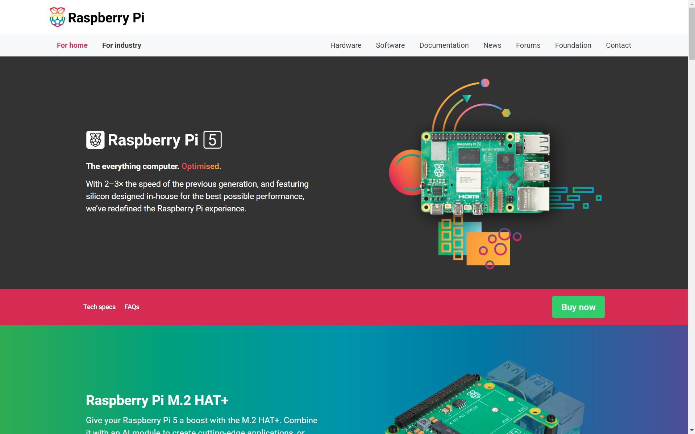

Raspberry Pi
Este proyecto se empleo para poder hacer las practicas del curso de arquitectura de computadoras, se uso una raspberry pi para poder hacer las simulaciones con la GPIO.

Conexion con la raspberry pi
Muestra la ventana de VNC viewer
Practica 8
En esta practica lo que hace es usar un potenciometro para poder marcar las lecturas si se suben o bajan.

Practica 9
En esta otra practia lo que se realizo fue el envio de un correo desde la raspberry.
Practica 10
Este lo que hace es unicamente reproducir una oracion apartir de un texto para poder reproducirlo en forma de audio.
Practica 11
Este muestra una ventana emergente para poder encender y apagar una led

Documentacion de la rapsberry pi
Se trabajo con una rapsberry pi 4 para para poder realizar estas practicas
Explicación
En este video se explica como funciona el proyecto